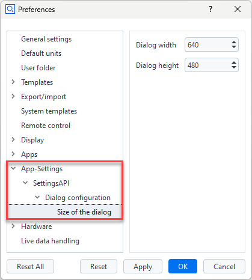

ZEISS INSPECT App Python API documentation
Welcome to the ZEISS INSPECT Python API documentation. Here you can find a detailed documentation of a subset of the App programming specification. Please bear in mind, that recording commands with the script editor can be used to add new functions to your script.
Note
The module importing behavior changed with ZEISS INSPECT 2025. Previously, the API modules could be used without proper import statements due to their internal handling. Beginning with ZEISS INSPECT 2025, each module is a full featured native Python module and
must be properly imported before use!
gom.api.addons
API for accessing the add-ons currently installed in the running software instance
This API enables access to the installed add-ons. Information about these add-ons can be queried, add-on files and resources can be read and if the calling instance is a member of one specific add-on, this specific add-on can be modified on-the-fly and during software update processes.
gom.api.addons.AddOn
Class representing a single add-on
This class represents a single add-on. Properties of that add-on can be queried from here.
gom.api.addons.AddOn.exists
- gom.api.addons.AddOn.exists(path: str): bool
Check if the given file or directory exists in an add-on
- API version:
1
- Parameters:
path (str) – File path as retrieved by ‘gom.api.addons.AddOn.get_file_list ()’
- Returns:
‘true’ if a file or directory with that name exists in the add-on
- Return type:
bool
This function checks if the given file exists in the add-on
gom.api.addons.AddOn.get_content_list
- gom.api.addons.AddOn.get_content_list(): list
Return the list of contents contained in the add-on
- API version:
1
- Returns:
List of contents in that add-on (full path)
- Return type:
list
gom.api.addons.AddOn.get_file
- gom.api.addons.AddOn.get_file(): str
Return the installed add-on file
- API version:
1
- Returns:
Add-on file path (path to the add-ons installed ZIP file) or add-on edit directory if the add-on is currently in edit mode.
- Return type:
str
This function returns the installed ZIP file representing the add-on. The file might be empty if the add-on has never been ‘completed’. If the add-on is currently in edit mode, instead the edit directory containing the unpacked add-on sources is returned. In any way, this function returns the location the application uses, too, to access add-on content.
gom.api.addons.AddOn.get_file_list
- gom.api.addons.AddOn.get_file_list(): list
Return the list of files contained in the add-on
- API version:
1
- Returns:
List of files in that add-on (full path)
- Return type:
list
This function returns the list of files and directories in an add-on. These path names can be used to read or write/modify add-on content.
Please note that the list of files can only be obtained for add-ons which are currently not
in edit mode ! An add-on in edit mode is unzipped and the get_file () function will return
the file system path to its directory in that case. That directory can then be browsed with
the standard file tools instead.
Example
for addon in gom.api.addons.get_installed_addons():
# Edited add-ons are file system based and must be accessed via file system functions
if addon.is_edited():
for root, dirs, files in os.walk(addon.get_file ()):
for file in files:
print(os.path.join(root, file))
# Finished add-ons can be accessed via this function
else:
for file in addon.get_file_list():
print (file)
gom.api.addons.AddOn.get_id
- gom.api.addons.AddOn.get_id(): UUID
Return the unique id (uuid) of this add-on
- API version:
1
- Returns:
Add-on uuid
- Return type:
UUID
This function returns the uuid associated with this add-on. The id can be used to uniquely address the add-on.
gom.api.addons.AddOn.get_level
- gom.api.addons.AddOn.get_level(): str
Return the level (system/shared/user) of the add-on
- API version:
1
- Returns:
Level of the add-on
- Return type:
str
This function returns the ‘configuration level’ of the add-on. This can be
‘system’ for pre installed add-on which are distributed together with the application
‘shared’ for add-ons in the public or shared folder configured in the application’s preferences or
‘user’ for user level add-ons installed for the current user only.
gom.api.addons.AddOn.get_name
- gom.api.addons.AddOn.get_name(): str
Return the displayable name of the add-on
- API version:
1
- Returns:
Add-on name
- Return type:
str
This function returns the displayable name of the add-on. This is the human readable name which is displayed in the add-on manager and the add-on store.
gom.api.addons.AddOn.get_required_software_version
- gom.api.addons.AddOn.get_required_software_version(): str
Return the minimum version of the ZEISS INSPECT software required to use this add-on
- API version:
1
- Returns:
Addon version in string format
- Return type:
str
By default, an add-on is compatible with the ZEISS INSPECT software version it was created in and all following software version. This is the case because it can be assumed that this add-on is tested with that specific software version, not with any prior version, leading to a minimum requirement. On the other hand, the software version where an add-on then later will break because of incompatibilities cannot be foreseen at add-on creation time. Thus, it is also assumed that a maintainer cares for an add-on and updates it to the latest software version if necessary. There cannot be a “works until” entry in the add-on itself, because this would require to modify already released version as soon as this specific version which breaks the add-on becomes known.
gom.api.addons.AddOn.get_script_list
- gom.api.addons.AddOn.get_script_list(): list
Return the list of scripts contained in the add-on
- API version:
1
- Returns:
List of scripts in that add-on (full path)
- Return type:
list
gom.api.addons.AddOn.get_version
- gom.api.addons.AddOn.get_version(): str
Return the version of the add-on
- API version:
1
- Returns:
Add-on version in string format
- Return type:
str
gom.api.addons.AddOn.has_license
- gom.api.addons.AddOn.has_license(): bool
Return if the necessary licenses to use this add-on are present
- API version:
1
This function returns if the necessary licenses to use the add-on are currently present. Add-ons can either be free and commercial. Commercial add-ons require the presence of a matching license via a license dongle or a license server.
gom.api.addons.AddOn.is_edited
- gom.api.addons.AddOn.is_edited(): bool
Return if the add-on is currently edited
- API version:
1
- Returns:
‘true’ if the add-on is currently in edit mode
- Return type:
bool
Usually, an add-on is simply a ZIP file which is included into the applications file system. When an add-on is in edit mode, it will be temporarily unzipped and is then present on disk in a directory.
gom.api.addons.AddOn.is_protected
- gom.api.addons.AddOn.is_protected(): bool
Return if the add-on is protected
- API version:
1
- Returns:
Add-on protection state
- Return type:
bool
The content of a protected add-on is encrypted. It can be listed, but not read. Protection includes both ‘IP protection’ (content cannot be read) and ‘copy protection’ (content cannot be copied, as far as possible)
gom.api.addons.AddOn.read
- gom.api.addons.AddOn.read(path: str): bytes
Read file from add-on
- API version:
1
- Parameters:
path (str) – File path as retrieved by ‘gom.api.addons.AddOn.get_file_list ()’
- Returns:
Content of that file as a byte array
- Return type:
bytes
This function reads the content of a file from the add-on. If the add-on is protected, the file can still be read but will be AES encrypted.
Example: Print all add-on ‘metainfo.json’ files
import gom
import json
for a in gom.api.addons.get_installed_addons ():
text = json.loads (a.read ('metainfo.json'))
print (json.dumps (text, indent=4))
gom.api.addons.AddOn.write
- gom.api.addons.AddOn.write(path: str, data: bytes): None
Write data into add-on file
- API version:
1
- Parameters:
path (str) – File path as retrieved by ‘gom.api.addons.AddOn.get_file_list ()’
data (bytes) – Data to be written into that file
This function writes data into a file into an add-ons file system. It can be used to update, migrate or adapt the one add-on the API call originates from. Protected add-ons cannot be modified at all.
Important
An add-on can modify only its own content ! Access to other add-ons is not permitted. Use this function with care, as the result is permanent !
gom.api.addons.get_addon
- gom.api.addons.get_addon(id: UUID): gom.api.addons.AddOn
Return the add-on with the given id
- API version:
1
- Parameters:
id (UUID) – Id of the add-on to get
- Returns:
Add-on with the given id
- Return type:
gom.api.addons.AddOn
- Throws:
Exception if there is no add-on with that id
This function returns the add-on with the given id
Example:
addon = gom.api.addons.get_addon ('1127a8be-231f-44bf-b15e-56da4b510bf1')
print (addon.get_name ())
> 'AddOn #1'
gom.api.addons.get_current_addon
- gom.api.addons.get_current_addon(): gom.api.addons.AddOn
Return the current add-on
- API version:
1
- Returns:
Add-on the caller is a member of or
Noneif there is no such add-on- Return type:
gom.api.addons.AddOn
This function returns the add-on the caller is a member of
Example:
addon = gom.api.addons.get_current_addon ()
print (addon.get_id ())
> d04a082c-093e-4bb3-8714-8c36c7252fa0
gom.api.addons.get_installed_addons
- gom.api.addons.get_installed_addons(): list[gom.api.addons.AddOn]
Return a list of the installed add-ons
- API version:
1
- Returns:
List of ‘AddOn’ objects. Each ‘AddOn’ object represents an add-on and can be used to query information about that specific add-on.
- Return type:
list[gom.api.addons.AddOn]
This function can be used to query information of the add-ons which are currently installed in the running instance.
Example:
for a in gom.api.addons.get_installed_addons ():
print (a.get_id (), a.get_name ())
gom.api.dialog
API for handling dialogs
This API is used to create and execute script based dialogs. The dialogs are defined in a JSON based description format and can be executed server side in the native UI style.
gom.api.dialog.create
- gom.api.dialog.create(context: Any, url: str): Any
Create modal dialog, but do not execute it yet
- Parameters:
context (Any) – Script execution context
url (str) – URL of the dialog definition (*.gdlg file)
- Returns:
Dialog handle which can be used to set up the dialog before executing it
- Return type:
Any
This function creates a dialog. The dialog is passed in an abstract JSON description defining its layout. The dialog is created but not executed yet. The dialog can be executed later by calling the ‘gom.api.dialog.show’ function. The purpose of this function is to create a dialog in advance and allow the user setting it up before
This function is part of the scripted contribution framework. It can be used in the scripts ‘dialog’ functions to pop up user input dialogs, e.g. for creation commands. Passing of the contributions script context is mandatory for the function to work.
gom.api.dialog.execute
- gom.api.dialog.execute(context: Any, url: str): Any
Create and execute a modal dialog
- Parameters:
context (Any) – Script execution context
url (str) – URL of the dialog definition (*.gdlg file)
- Returns:
Dialog input field value map. The dictionary contains one entry per dialog widget with that widgets current value.
- Return type:
Any
This function creates and executes a dialog. The dialog is passed in an abstract JSON description and will be executed modal. The script will pause until the dialog is either confirmed or cancelled.
This function is part of the scripted contribution framework. It can be used in the scripts ‘dialog’ functions to pop up user input dialogs, e.g. for creation commands. Passing of the contributions script context is mandatory for the function to work.
gom.api.dialog.show
- gom.api.dialog.show(context: Any, dialog: Any): Any
Show previously created and configured dialog
- Parameters:
context (Any) – Script execution context
dialog (Any) – Handle of the previously created dialog
- Returns:
Dialog input field value map. The dictionary contains one entry per dialog widget with that widgets current value.
- Return type:
Any
This function shows and executes previously created an configured dialog. The combination of ‘create’ and ‘show’ in effect is the same as calling ‘execute’ directly.
gom.api.extensions
API for script based functionality extensions
This API enables the user to define various element classes which can be used to extend the functionality of ZEISS INSPECT.
gom.api.extensions.ScriptedElement
This class is used to define a scripted element. A scripted element is a user defined element type where configuration and computation are happening entirely in a Python script, so user defined behavior and visualization can be implemented.
Element id
Every element must have a unique id. It is left to the implementor to avoid inter app conflicts here. The
id can be hierarchical like company.topic.group.element_type. The id may only contain lower case characters,
grouping dots and underscores.
Element category
The category of an element type is used to find the application side counterpart which cares for the
functionality implementation. For example, scriptedelement.actual links that element type the application
counterpart which cares for scripted actual elements and handles its creation, editing, administration, …
Working with stages
Each scripted element must be computed for one or more stages. In the case of a preview or for simple project setups, computation is usually done for a single stage only. In case of a recalc, computation for many stages is usually required. To support both cases and keep it simple for beginners, the scripted elements are using two computation functions:
compute (): Computes the result for one single stage only. If nothing else is implemented, this function will be called for each stage one by one and return the computed value for that stage only. The stage for which the computation is performed is passed via the function’s script context, but does usually not matter as all input values are already associated with that single stage.compute_stages (): Computes the results for many (all) stages at once. The value parameters are always vectors of the same size, one entry per stage. This is the case even if there is just one stage in the project. The result is expected to be a result vector of the same size as these stage vectors. The script context passed to that function will contain a list of stages of equal size matching the value’s stage ordering.
So for a project with stages, it is usually sufficient to just implement compute (). For increased
performance or parallelization, compute_stages () can then be implemented as a second step.
Stage indexing
Stages are represented by an integer index. No item reference or other resolvable types like
gom.script.project[...].stages['Stage #1'] are used because it is assumed that reaching over stage borders into
other stages’ data domain will lead to incorrect or missing dependencies. Instead, if vectorized data or data tensors
are fetched, the stage sorting within that object will match that stages vector in the context. In the best case, the
stage vector is just a consecutive range of numbers (0, 1, 2, 3, ...) which match the index in a staged tensor.
Nevertheless, the vector can be number entirely different depending on active/inactive stages, stage sorting, …
Caution
Usually, it is not possible to access arbitrary stages of other elements due to recalc restrictions !
Additional element data
Every element can store arbitrary data sets in addition to the computed values. While the computed values are used to create the element’s geometry and are stored in the elements internal structures, the additional data is kept in the associated EDM project database and can be retrieved via an element token.
Each elements compute () function returns a dictionary always. The exact format of that dictionary depends on the
element type and the elements geometry data is tagged by the fixed key named. In addition, that result map can contain
a dictionary with key data. The key/value pairs within can then be accessed via the element’s token interface under
that exact same name.
Example:
def compute (self, context, values):
# Compute the element geometry (a point is that case)
center = self.compute_center (values['threshold'])
# Return both element specific geometry plus an arbitraty data set
return {
'geometry': {
'type': 'point',
'center': center
},
'data': {
'threshold': values['threshold'],
'description': values['description']
}
}
gom.api.extensions.ScriptedElement.Event
Event types passed to the event () function
DIALOG_INITIALIZE: Sent when the dialog has been initialized and made visibleDIALOG_CHANGED: A dialog widget value changed
gom.api.extensions.ScriptedElement.init
- gom.api.extensions.ScriptedElement.__init__(self: Any, id: str, category: str, description: str, element_type: str, callables: Any, properties: Any): None
- Parameters:
id (str) – Unique contribution id, like
special_pointcategory (str) – Scripted element type id, like
scriptedelement.actualdescription (str) – Human readable contribution description
element_type (str) – Type of the generated element (point, line, …)
category – Contribution category
Constructor
gom.api.extensions.ScriptedElement.add_selected_element_parameter
- gom.api.extensions.ScriptedElement.add_selected_element_parameter(self: Any, values: Dict[str, Any]): None
- Parameters:
values (Dict[str, Any]) – Values map
Adds the current selected element as the target element to the values map
gom.api.extensions.ScriptedElement.add_target_element_parameter
- gom.api.extensions.ScriptedElement.add_target_element_parameter(self: Any, values: Dict[str, Any], element: Any): None
- Parameters:
values (Dict[str, Any]) – Values map
element (Any) – Element to be added
Adds an element as the target element to the parameters map in the appropriate fields
gom.api.extensions.ScriptedElement.apply_dialog
- gom.api.extensions.ScriptedElement.apply_dialog(self: Any, args: Any, values: Any): None
Apply dialog values to the dialog arguments. This function is used to read the dialog values
back into the dialog arguments. See function dialog () for a format description of the arguments.
gom.api.extensions.ScriptedElement.check_list
- gom.api.extensions.ScriptedElement.check_list(self: Any, values: Dict[str, Any], key: str, value_type: type, length: int): None
- Parameters:
values – : Dictionary of values
key – : Key of the value to check
value_type – : Type each of the values is expected to have
length – : Number of values expected in the tuple or ‘None’ if any length is allowed
Check tuple result for expected properties
gom.api.extensions.ScriptedElement.check_target_element
- gom.api.extensions.ScriptedElement.check_target_element(self: Any, values: Dict[str, Any]): None
Check if a base element (an element the scripted element is constructed upon) is present in the values map
gom.api.extensions.ScriptedElement.check_value
- gom.api.extensions.ScriptedElement.check_value(self: Any, values: Dict[str, Any], key: str, value_type: type): None
- Parameters:
values – : Dictionary of values
key – : Key of the value to check
value_type – : Type the value is expected to have
Check a single value for expected properties
gom.api.extensions.ScriptedElement.compute
- gom.api.extensions.ScriptedElement.compute(self: Any, context: Any, values: Any): None
- Parameters:
context (Any) – Script context object containing execution related parameters. This includes
values (Any) – Dialog widget values as a dictionary. The keys are the widget names as defined
- Returns:
Computed values for the given stage. This is always a map, where the keys strongly depend
- Return type:
None
This function is called for a single stage value is to be computed. The input values from the
associated dialog function are passed as kwargs parameters - one value as one specific
parameter named as the associated input widget.
the stage this computation call refers to.
in the dialog definition.
on the element type.
gom.api.extensions.ScriptedElement.compute_stage
- gom.api.extensions.ScriptedElement.compute_stage(self: Any, context: Any, values: Any): None
- Parameters:
context (Any) – Script context object containing execution related parameters. This includes
values (Any) – Dialog widget values as a dictionary. The keys are the widget names as defined
- Returns:
Computed values for the given stage. This is always a map, where the keys strongly depend
- Return type:
None
This function is called for a single stage value is to be computed. The input values from the
associated dialog function are passed as kwargs parameters - one value as one specific
parameter named as the associated input widget.
the stage this computation call refers to.
in the dialog definition.
on the element type.
gom.api.extensions.ScriptedElement.compute_stages
- gom.api.extensions.ScriptedElement.compute_stages(self: Any, context: Any, values: Any): None
- Parameters:
context (Any) – Script context object containing execution related parameters. This includes
values (Any) – Dialog widget values as a dictionary.
- Returns:
Dictionary containing the results and the states of the computation. Each entry in these
- Return type:
None
This function is called to compute multiple stages of the scripted element. The expected result is a vector of the same length as the number of stages.
The function is calling the compute () function of the scripted element for each stage by default.
For a more efficient implementation, it can be overwritten and bulk compute many stages at once.
the stage this computation call refers to.
dictionaries is a vector of the same length as the number of stages. The entries are
- `results`: Computed values for each stage
- `states`: States of the computation for each stage. `True` if the computation was successful.
gom.api.extensions.ScriptedElement.dialog
- gom.api.extensions.ScriptedElement.dialog(self: Any, context: Any, args: Any): None
- Parameters:
context (Any) – Script context object containing execution related parameters.
args (Any) – Dialog execution arguments. This is a JSON like map structure, see above for the specific format.
- Returns:
Modified arguments. The same
argsobject is returned, but must be modified to reflect the actual dialog state.- Return type:
None
This function is called to create the dialog for the scripted element. The dialog is used to configure the element and to provide input values for the computation.
The dialog arguments are passed as a JSON like map structure. The format is as follows:
{
"version": 1,
"name": "Element name",
"values: {
"widget1": value1,
"widget2": value2
...
}
}
version: Version of the dialog structure. This is used to allow for future changes in the dialog structure without breaking existing scriptsname: Human readable name of the element which is created or editedvalues: A map of widget names and their initial values. The widget names are the keys and the values are the initial or edited values for the widgets. This map is always present, but can be empty for newly created elements. The element names are matching those in the user defined dialog, so the values can be set accordingly. As a default, use the functioninitialize_dialog (args)to setup all widgets from the args values.
The helper functions initialize_dialog () and apply_dialog () can be used to initialize the dialog directly.
and read back the generated values. So a typical dialog function will look like this:
def dialog (self, context, args):
dlg = gom.api.dialog.create ('/dialogs/create_element.gdlg')
self.initialize_dialog (dlg, args)
args = self.apply_dialog (args, gom.api.dialog.show (dlg))
return args
For default dialogs, this can be shortened to a call to show_dialog () which will handle the dialog
creation, initialization and return the dialog values in the correct format in a single call:
def dialog (self, context, args):
return self.show_dialog (context, args, '/dialogs/create_element.gdlg')
gom.api.extensions.ScriptedElement.event
- gom.api.extensions.ScriptedElement.event(self: Any, context: Any, event_type: Any, parameters: Any): None
- Parameters:
context (Any) – Script context object containing execution related parameters. This includes the stage this computation call refers to.
event_type (Any) – Event type
args – Event arguments
- Returns:
Trueif the event requires a recomputation of the elements preview. Upon return, the framework- Return type:
None
Contribution event handling function. This function is called when the contributions UI state changes. The function can then react to that event and update the UI state accordingly.
will then trigger a call to the `compute ()` function and use its result for a preview update.
In the case of `False`, no recomputation is triggered and the preview remains unchanged.
gom.api.extensions.ScriptedElement.event_handler
- gom.api.extensions.ScriptedElement.event_handler(self: Any, context: Any, event_type: Any, parameters: Any): None
Wrapper function for calls to event (). This function is called from the application side
and will convert the event parameter accordingly
gom.api.extensions.ScriptedElement.initialize_dialog
- gom.api.extensions.ScriptedElement.initialize_dialog(self: Any, context: Any, dlg: Any, args: Any): bool
- Parameters:
context (Any) – Script context object containing execution related parameters.
dlg (Any) – Dialog handle as created via the
gom.api.dialog.create ()functionargs (Any) – Dialog arguments as passed to the
dialog ()function with the same format as described there. Values which are not found in the dialog are ignored.
- Returns:
Trueif the dialog was successfully initialized and all values could be applied.- Return type:
bool
Initializes the dialog from the given arguments. This function is used to setup the dialog widgets from the given arguments. The arguments are a map of widget names and their values.
Otherwise, the service's log will show a warning about the missing values.
gom.api.extensions.ScriptedElement.is_visible
- gom.api.extensions.ScriptedElement.is_visible(self: Any, context: Any): None
- Returns:
Trueif the element is visible in the menus.- Return type:
None
This function is called to check if the scripted element is visible in the menus. This is usually the case if the selections and other precautions are setup and the user then shall be enabled to create or edit the element.
The default state is True, so this function must be overwritten to add granularity to the elements visibility.
gom.api.extensions.ScriptedElement.show_dialog
- gom.api.extensions.ScriptedElement.show_dialog(self: Any, context: Any, args: Any, url: Any): None
- Parameters:
context (Any) – Script context object containing execution related parameters.
args (Any) – Dialog execution arguments. This is a JSON like map structure, see above.
url (Any) – Dialog URL of the dialog to show
Show dialog and return the values. This function is a helper function to simplify the dialog creation and execution. It will create the dialog, initialize it with the given arguments and show it. The resulting values are then returned in the expected return format.
gom.api.extensions.actuals
Scripted actual elements
The classes in this module are used to define scripted actual elements. These elements are used to generate actuals in the ZEISS INSPECT software and will enable the user to create script defined element types.
gom.api.extensions.actuals.Circle
Scripted actual circle element
The expected parameters from the element’s compute () function is a map with the following format:
{
"center" : (x: float, y: float, z: float), // Centerpoint of the circle
"direction": (x: float, y: float, z: float), // Direction/normal of the circle
"radius" : r: float, // Radius of the circle
"data": {...} // Optional element data, stored with the element
}
gom.api.extensions.actuals.Cone
Scripted actual cone element
The expected parameters from the element’s compute () function is a map with the following format:
{
"point1": (x: float, y: float, z: float), // First point of the cone (circle center)
"radius1": r1: float, // Radius of the first circle
"point2": (x: float, y: float, z: float), // Second point of the cone (circle center)
"radius2": r2: float, // Radius of the second circle
"data": {...} // Optional element data, stored with the element
}
gom.api.extensions.actuals.Curve
Scripted actual curve element
The expected parameters from the element’s compute () function is a map with the following format:
{
"plane": p: Plane, // Plane of the curve (optional)
"curves": [Curve], // List of curves
"data": {...} // Optional element data, stored with the element
}
The format of the Curve object is:
{
"points": [(x: float, y: float, z: float), ...]
}
See the Plane element for the formats of the plane object.
gom.api.extensions.actuals.Cylinder
Scripted actual cylinder element
The expected parameters from the element’s compute () function is a map with the following format:
{
"point": (x: float, y: float, z: float), // Base point of the cylinder
"direction": (x: float, y: float, z: float), // Direction of the cylinder
"radius": r: float, // Radius of the cylinder
"data": {...} // Optional element data, stored with the element
}
gom.api.extensions.actuals.Distance
Scripted actual distance element
The expected parameters from the element’s compute () function is a map with the following format:
{
"point1": (x: float, y: float, z: float), // First point of the distance
"point2": (x: float, y: float, z: float), // Second point of the distance
"data": {...} // Optional element data, stored with the element
}
gom.api.extensions.actuals.Plane
Scripted actual plane element
The expected parameters from the element’s compute () function is a map with the following format:
{
"normal": (x: float, y: float, z: float), // Normal of the plane
"distance": d: float, // Distance of the plane
"data": {...} // Optional element data, stored with the element
}
or
{
"target": plane: Plane, // Source plane point of this plane
"offset": offset: float, // Offset relative to the source plane
"data": {...} // Optional element data, stored with the element
}
or
{
"plane": Reference, // Reference to another plane element of coordinate system
"data": {...} // Optional element data, stored with the element
}
gom.api.extensions.actuals.Point
Scripted actual point element
The expected parameters from the element’s compute () function is a map with the following format:
{
"value": (x: float, y: float, z: float), // The point in 3D space.
"data": {...} // Optional element data, stored with the element
}
gom.api.extensions.actuals.PointCloud
Scripted actual point cloud element
The expected parameters from the element’s compute () function is a map with the following format:
{
"points": [(x: float, y: float, z: float), ...], // List of points
"normals": [(x: float, y: float, z: float), ...], // List of normals for each point
"data": {...} // Optional element data, stored with the element
}
gom.api.extensions.actuals.ScriptedActual
This class is the base class for all scripted actuals
gom.api.extensions.actuals.ScriptedActual.init
- gom.api.extensions.actuals.ScriptedActual.__init__(self: Any, id: str, description: str, element_type: str, help_id: str): None
- Parameters:
id (str) – Scripted actual id string
description (str) – Human readable name, will appear in menus
element_type (str) – Type of the generated element (point, line, …)
Constructor
gom.api.extensions.actuals.Section
Scripted actual section element
The expected parameters from the element’s compute () function is a map with the following format:
{
"curves": [Curve],
"plane": Plane,
"cone": Cone,
"cylinder": Cylinder,
"data": {...} // Optional element data, stored with the element
}
The format of the Curve object is:
{
"points": [(x: float, y: float, z: float), ...] // List of points
"normals": [(x: float, y: float, z: float), ...] // List of normals for each point
}
See the Plane, Cone and Cylinder element for the formats of the plane, cone and cylinder object.
gom.api.extensions.actuals.Surface
Scripted actual surface element
The expected parameters from the element’s compute () function is a map with the following format:
{
"vertices": [(x: float, y: float, z: float), ...], // List of vertices
"triangles": [(i1: int, i2: int, i3: int), ...], // List of triangles (vertices' indices)
"data": {...} // Optional element data, stored with the element
}
gom.api.extensions.actuals.SurfaceCurve
Scripted actual surface curve element
The expected parameters from the element’s compute () function is a map with the following format:
{
"curves": [Curve], // Curve definition
"data": {...} // Optional element data, stored with the element
}
The format of the Curve object is:
{
"points": [(x: float, y: float, z: float), ...] // List of points
"normals": [(x: float, y: float, z: float), ...] // List of normals for each point
}
gom.api.extensions.actuals.SurfaceDefects
Scripted actual surface defects element
gom.api.extensions.actuals.ValueElement
Scripted actual value element
The expected parameters from the element’s compute () function is a map with the following format:
{
"value": v: float, // Value of the element
"data": {...} // Optional element data, stored with the element
}
gom.api.extensions.actuals.Volume
Scripted actual volume element
The expected parameters from the element’s compute () function is a map with the following format:
{
'voxel_data': data: np.array (shape=(x, y, z), dtype=np.float32), // Voxels of the volume
'transformation': (x: float, y: float, z: float), // Transformation of the volume
"data": {...} // Optional element data, stored with the element
}
gom.api.extensions.actuals.VolumeDefects
Scripted actual volume defects element
gom.api.extensions.actuals.VolumeDefects2d
Scripted actual 2d volume defects element
gom.api.extensions.actuals.VolumeRegion
Scripted actual volume region element
gom.api.extensions.actuals.VolumeSection
Scripted actual volume section element
gom.api.extensions.actuals.VolumeSegmentation
Scripted actual volume segmentation element
gom.api.extensions.inspections
gom.api.extensions.inspections.Curve
Scripted curve inspection
The expected parameters from the elements compute () function is a map with the following format:
{
"actual_values": [v: float, v: float, ...] // Deviations
"nominal": float, // Nominal value
"target_element": gom.Item, // Inspected element
"data": {...} // Optional element data, stored with the element
}
gom.api.extensions.inspections.Scalar
Scripted scalar inspection
The expected parameters from the element’s compute () function is a map with the following format:
{
"nominal": float, // Nominal value
"actual": float, // Actual value
"target_element": gom.Item, // Inspected element
"data": {...} // Optional element data, stored with the element
}
gom.api.extensions.inspections.ScriptedInspection
This class is the base class for all scripted inspections
gom.api.extensions.inspections.ScriptedInspection.init
- gom.api.extensions.inspections.ScriptedInspection.__init__(self: Any, id: str, description: str, element_type: str, typename: str, unit: str, abbreviation: str, help_id: str): None
- Parameters:
id (str) – Scripted actual id string
description (str) – Human readable name, will appear in menus
element_type (str) – Type of the generated element (inspection.scalar, inspection.surface, …)
type_name – Scripted inspection type name. Must be a globally unique name.
unit (str) – Unit of the inspection value
abbreviation (str) – Abbreviation of the inspection type
Constructor
gom.api.extensions.inspections.Surface
Scripted surface inspection
The expected parameters from the element’s compute () function is a map with the following format:
{
"deviation_values": [v: float, v: float, ...] // Deviations
"nominal": float, // Nominal value
"target_element": gom.Item, // Inspected element
"data": {...} // Optional element data, stored with the element
}
gom.api.extensions.nominals
gom.api.extensions.nominals.Circle
Scripted nominal circle element
The expected parameters from the element’s compute () function is a map with the following format:
{
"center" : (x: float, y: float, z: float), // Centerpoint of the circle
"direction": (x: float, y: float, z: float), // Direction/normal of the circle
"radius" : r: float, // Radius of the circle
"data": {...} // Optional element data, stored with the element
}
gom.api.extensions.nominals.Cone
Scripted nominal cone element
The expected parameters from the element’s compute () function is a map with the following format:
{
"point1": (x: float, y: float, z: float), // First point of the cone (circle center)
"radius1": r1: float, // Radius of the first circle
"point2": (x: float, y: float, z: float), // Second point of the cone (circle center)
"radius2": r2: float, // Radius of the second circle
"data": {...} // Optional element data, stored with the element
}
gom.api.extensions.nominals.Curve
Scripted nominal curve element
The expected parameters from the element’s compute () function is a map with the following format:
{
"plane": p: Plane // Plane of the curve (optional)
"curves": [Curve], // List of curves
"data": {...} // Optional element data, stored with the element
}
The format of the Curve object is:
{
"points": [(x: float, y: float, z: float), ...] // List of points
}
See the Plane element for the formats of the plane object.
gom.api.extensions.nominals.Cylinder
Scripted nominal cylinder element
The expected parameters from the element’s compute () function is a map with the following format:
{
"point": (x: float, y: float, z: float), // Base point of the cylinder
"direction": (x: float, y: float, z: float), // Direction of the cylinder
"radius": r: float, // Radius of the cylinder
"data": {...} // Optional element data, stored with the element
}
gom.api.extensions.nominals.Distance
Scripted nominal distance element
The expected parameters from the element’s compute () function is a map with the following format:
{
"point1": (x: float, y: float, z: float), // First point of the distance
"point2": (x: float, y: float, z: float), // Second point of the distance
"data": {...} // Optional element data, stored with the element
}
gom.api.extensions.nominals.Plane
Scripted nominal plane element
The expected parameters from the element’s compute () function is a map with the following format:
{
"normal": (x: float, y: float, z: float), // Normal of the plane
"distance": d: float, // Distance of the plane
"data": {...} // Optional element data, stored with the element
}
or
{
"target": plane: Plane, // Source plane point of this plane
"offset": offset: float, // Offset relative to the source place
"data": {...} // Optional element data, stored with the element
}
or
{
"plane": Reference, // Reference to another plane element of coordinate system
"data": {...} // Optional element data, stored with the element
}
gom.api.extensions.nominals.Point
Scripted nominal point element
The expected parameters from the element’s compute () function is a map with the following format:
{
"value": (x: float, y: float, z: float), // The point in 3D space.
"data": {...} // Optional element data, stored with the element
}
gom.api.extensions.nominals.PointCloud
Scripted nominal point cloud element
The expected parameters from the element’s compute () function is a map with the following format:
{
"points": [(x: float, y: float, z: float), ...], // List of points
"normals": [(x: float, y: float, z: float), ...], // List of normals for each point
"data": {...} // Optional element data, stored with the element
}
gom.api.extensions.nominals.ScriptedNominal
This class is the base class for all scripted nominals
gom.api.extensions.nominals.ScriptedNominal.init
- gom.api.extensions.nominals.ScriptedNominal.__init__(self: Any, id: str, description: str, element_type: str, help_id: str): None
- Parameters:
id (str) – Scripted nominal id string
description (str) – Human readable name, will appear in menus
element_type (str) – Type of the generated element (point, line, …)
Constructor
gom.api.extensions.nominals.Section
Scripted nominal section element
The expected parameters from the element’s compute () function is a map with the following format:
{
"curves": [Curve],
"plane": Plane,
"cone": Cone,
"cylinder": Cylinder,
"data": {...} // Optional element data, stored with the element
}
The format of the Curve object is:
{
"points": [(x: float, y: float, z: float), ...] // List of points
"normals": [(x: float, y: float, z: float), ...] // List of normals for each point
}
See the Plane, Cone and Cylinder element for the formats of the plane, cone and cylinder object.
gom.api.extensions.nominals.Surface
Scripted nominal surface element
The expected parameters from the element’s compute () function is a map with the following format:
{
"vertices": [(x: float, y: float, z: float), ...], // List of vertices
"triangles": [(i1: int, i2: int, i3: int), ...], // List of triangles (vertices indices)
"data": {...} // Optional element data, stored with the element
}
gom.api.extensions.nominals.SurfaceCurve
Scripted nominal surface curve element
The expected parameters from the element’s compute () function is a map with the following format:
{
"curves": [Curve], // Curves
"data": {...} // Optional element data, stored with the element
}
The format of the Curve object is:
{
"points": [(x: float, y: float, z: float), ...] // List of points
"normals": [(x: float, y: float, z: float), ...] // List of normals for each point
}
gom.api.extensions.nominals.ValueElement
Scripted nominal value element
The expected parameters from the element’s compute () function is a map with the following format:
{
"value": v: float, // Value of the element
"data": {...} // Optional element data, stored with the element
}
gom.api.extensions.views
Scripted views
The classes in this module enable the user to define scripted views. A scripted view implements a model/view pair, where a Python script fetches data from the ZEISS INSPECT application (model part) and a JavaScript renderer visualizes it in a custom way (view part) inside of a native ZEISS INSPECT view. Also, events can be emitted from the JavaScript renderer and processed by the Python script.
gom.api.extensions.views.ScriptedCanvas
This class is the base class for all scripted views
A scripted view is a view that is embedded into the native ZEISS INSPECT application, but its content is rendered by a JavaScript renderer fetching its data from a Python service. Both these parts form a model/view pair where the model (the python script) fetches and processes the data from the ZEISS INSPECT application, while the view (the JavaScript renderer) visualizes it in a custom way.
The purpose of the ScriptedView class now on the one hand is to provide the model, on the other
hand to bring both parts together.
Identification
A scripted view is identified by its id string. This string must be globally unique, as the scripted
view code can be part of an app, which shared its id space with other apps installed on the same system.
It is advised to use a reverse domain name notation for the id, e.g. com.mycompany.myapp.myview.
Implementation
A very simple example for a scripted view API contribution can look like this:
import gom
import gom.api.extensions.views
from gom import apicontribution
@apicontribution
class MyScriptedView (gom.api.extensions.views.ScriptedView):
def __init__(self):
super().__init__(id='com.zeiss.testing.scriptedview',
description='My Scripted View',
renderer='renderers/MyRenderer.js',
functions=[
self.get_data
],
bundle='npms/MyScriptedView.js')
def get_data(self):
return {
'text': 'Hello World'
}
gom.run_api ())
Here, the scripted view
has the id
com.zeiss.testing.scriptedviewis named
My Scripted Viewin menus etc.exposes the class function
get_dataas a callable function to the JavaScript rendereruses the renderer script
renderers/MyRenderer.jsto visualize the data.
The JavaScript renderer can call the get_data function to get the data to visualize in a custom way
via the gom.bridge object:
function renderer () {
var data = gom.bridge.get_data();
console.log(data.text);
}
Event handling
The JavaScript renderer can emit events which can then be processed by the python side. There are a few system
events, but the renderer itself can produce custom events. The event instance method is called by the JavaScript
renderer in effect in case of en event. It can be overwritten in custom scripted view implementations:
...
@apicontribution
class MyScriptedView (gom.api.extensions.views.ScriptedView):
...
def event(self, event: str, args: Any):
if event == self.Event.INITIALIZED:
print('View initialized')
On the JavaScript side, the event can be emitted like this:
function renderer () {
gom.bridge.__events__.emit('view::initialized', 'Hello World');
}
Using 3rd party modules
Caution
Please be aware of the necessary FOSS and copyright issues when using 3rd party modules in your apps !
JavaScript strongly related to 3rd party modules, for example from node.js. The bundle property
allows to specify a NPM bundle that is used by the JavaScript renderer. The bundle must be present
as a single file in the npms folder of the app. The JavaScript renderer can use this bundle to load 3rd party
modules. If present, that bundle will be inserted into the JavaScript engine before the renderer process is
started.
JavaScript bundles can be creates in various ways, for example via a webpack build. Without going too much into detail about the node.js/npm foundations, the following example shows how to create a simple ‘react’ module bundle using node.js and webpack.
"name": "app-module-bundle",
"version": 1,
"description": "App module bundle",
"private": true,
"scripts": {
"build": "webpack --mode production"
},
"dependencies": {
"react": "^18.2.0",
"react-dom": "^18.2.0",
"react-scripts": "^5.0.1"
},
"devDependencies": {
"webpack": "^5.88.2",
"webpack-cli": "^5.1.4"
}
Then, a webpack.config.js like the following has to be added:
const path = require('path');
module.exports = {
mode: process.env.NODE_ENV || 'production',
entry: './src/index.js',
output: {
path: __dirname + '/dist',
filename: 'bundle.js',
library: {
name: '""" + project_title.replace(' ', '') + """Bundle',
type: 'umd',
export: 'default'
},
globalObject: 'this'
},
// We want to bundle all modules together
optimization: {
minimize: true
}
};
Please refer to the node.js and webpack documentation for more details on how to create a bundle. Additionally,
have a look into the app examples for a more detailed example as a starting point for your own scripted views.
gom.api.extensions.views.ScriptedCanvas.Event
Event types passed to the event () function
INITIALIZED: Sent when the view has been initialized
gom.api.extensions.views.ScriptedCanvas.init
- gom.api.extensions.views.ScriptedCanvas.__init__(self: Any, id: str, description: str, renderer: str, functions: List[Any], properties: Dict[str, Any], bundle: str): None
- Parameters:
id (str) – Globally unique scripted view id string
description (str) – Human readable name, will appear in menus etc.
renderer (str) – Path to the JavaScript renderer script
functions (List[Any]) – List of functions that can be called by the JavaScript renderer
properties (Dict[str, Any]) – Additional properties
bundle (str) – Packages NPM bundle this scripted view related on
Constructor
gom.api.extensions.views.ScriptedEditor.DataTypes
Data types that can be returned by get_data_types () and are used to determine the load mechanism for each file of an app content
NONE: Do not load data from the fileJSON: Load data as JSON format, i.e., as a ‘dict’STRING: Load data as plain stringBYTES: Load data as pure bytes array
gom.api.extensions.views.ScriptedEditor.extract_data
- gom.api.extensions.views.ScriptedEditor.extract_data(self: Any, content: str, json: List[Any]): None
- Parameters:
content (str) – Name of App Content
json (List[Any]) – List of data created by the editor (one entry per file).
- Returns:
List of tuples. Each tuples holds the filename, the processed data to save and the DataTypes of the file to save.
- Return type:
None
Inverse of self.prepare_data()
This function processes the data generated by the editor and returns it in a format that can be saved to the files.
gom.api.extensions.views.ScriptedEditor.get_data_types
- gom.api.extensions.views.ScriptedEditor.get_data_types(self: Any, content: str, files: List[str]): None
- Parameters:
content (str) – Name of App Content
files (List[str]) – List of files belonging to this App Content
- Returns:
List of tuples matching each filename to a DataTypes
- Return type:
None
Determine the loading type for each app content file.
gom.api.extensions.views.ScriptedEditor.prepare_data
- gom.api.extensions.views.ScriptedEditor.prepare_data(self: Any, content: str, data: List[tuple[str, Any]], readonly: bool): None
- Parameters:
content (str) – Name of App Content
data (List[tuple[str, Any]]) – List of tuples. Each tuple holds the filename and the data in the format specified by get_data_types ().
readonly (bool) – Whether the editor is opened in read-only mode
- Returns:
List of dictionaries (JSON style) for each initial file.
- Return type:
None
Prepare JSON style data from app contents.
gom.api.extensions.views.ScriptedView.Event
Event types passed to the event () function
INITIALIZED: Sent when the view has been initialized
gom.api.extensions.views.ScriptedView.init
- gom.api.extensions.views.ScriptedView.__init__(self: Any, id: str, viewtype: str, description: str, functions: List[Any], properties: Dict[str, Any], callables: Dict[str, Any]): None
- Parameters:
id (str) – Globally unique scripted view id string
description (str) – Human readable name, will appear in menus etc.
renderer – Path to the JavaScript renderer script
functions (List[Any]) – List of functions that can be called by the JavaScript renderer
properties (Dict[str, Any]) – Additional properties
bundle – Packages NPM bundle this scripted view related on
Constructor
gom.api.extensions.views.ScriptedView.event
- gom.api.extensions.views.ScriptedView.event(self: Any, event: str, args: Any): None
Event handler
- Parameters:
event (str) – Event name
args (Any) – Event arguments
This method is called by the JavaScript renderer when an event is triggered.
gom.api.imaging
Image point/pixel related functions
Image related functions can be used to query images from the measurements of a project. This is not done directly, but via an ‘image acquisition’ object which acts as a proxy between the image storing data structure and the functions which can be used to process the image data.
Terminology:
‘point’: 3D coordinate in the project.
‘pixel’: 2D coordinate in an image.
gom.api.imaging.Acquisition
Class representing a single acquisition
An acquisition describes a camera position and viewing direction of a measurement.
gom.api.imaging.Acquisition.get_angle
- gom.api.imaging.Acquisition.get_angle(): gom.Vec3d
Return viewing angles of the camera during the measurement
gom.api.imaging.Acquisition.get_coordinate
- gom.api.imaging.Acquisition.get_coordinate(): gom.Vec3d
Return 3d coordinate of the camera during the measurement
gom.api.imaging.compute_epipolar_line
- gom.api.imaging.compute_epipolar_line(source: gom.api.imaging.Acquisition, traces: list[tuple[gom.Vec2d, gom.Object]], max_distance: float): list[list[gom.Vec2d]]
Compute epipolar line coordinates
- API version:
1
- Parameters:
source (gom.api.imaging.Acquisition) – Handle of the image acquisition the epipolar line should be found in.
traces (list[tuple[gom.Vec2d, gom.Object]]) – List of pairs where each entry describes a pixel image coordinate plus the image acquisition object which should be used to compute the matching point. The image acquisition object here is the “other” acquisition providing the pixels used to find the matching epipolar lines in the
sourcesobject.max_distance (float) – Maximum search distance in mm.
- Returns:
List of matching points
- Return type:
list[list[gom.Vec2d]]
This function computes the parametrics of an epipolar line from pixels projected into images.
Example
stage = gom.app.project.stages['Stage 1']
point = gom.app.project.actual_elements['Point 1'].coordinate
left = gom.api.project.get_image_acquisition (measurement, 'left camera', [stage.index])[0]
right = gom.api.project.get_image_acquisition (measurement, 'right camera', [stage.index])[0]
l = gom.api.imaging.compute_epipolar_line (left, [(gom.Vec2d (1617, 819), right)], 10.0)
print (l)
[[gom.Vec2d (4.752311764226988, 813.7915394509045), gom.Vec2d (10.749371580282741, 813.748887458453), gom.Vec2d
(16.73347976996274, 813.706352662515), ...]]
gom.api.imaging.compute_pixels_from_point
- gom.api.imaging.compute_pixels_from_point(point_and_image_acquisitions: list[tuple[gom.Vec3d, gom.Object]]): list[gom.Vec2d]
Compute pixel coordinates from point coordinates
- API version:
1
- Parameters:
point_and_image_acquisitions (list[tuple[gom.Vec3d, gom.Object]]) – List of (point, acquisition) tuples
- Returns:
List of matching points
- Return type:
list[gom.Vec2d]
This function is used to compute the location of a 3d point in a 2d image. This is a photogrammetric operation which will return a precise result. The input parameter is a list of tupels where each tuple consists of a 3d point and and acquisition object. The acquisition object is then used to compute the location of the 3d point in the referenced image. This might lead to multiple pixels as a result, so the return value is again a list containing 0 to n entries of pixel matches.
Example
measurement = gom.app.project.measurement_series['Deformation series'].measurements['D1']
stage = gom.app.project.stages['Stage 1']
point = gom.app.project.actual_elements['Point 1'].coordinate
left = gom.api.project.get_image_acquisition (measurement, 'left camera', [stage.index])[0]
right = gom.api.project.get_image_acquisition (measurement, 'right camera', [stage.index])[0]
p = gom.api.imaging.compute_pixels_from_point ([(point, left), (point, right)])
print (p)
[gom.Vec2d (1031.582008690226, 1232.4155555222544), gom.Vec2d (1139.886626169376, 1217.975608783256)]
gom.api.imaging.compute_point_from_pixels
- gom.api.imaging.compute_point_from_pixels(pixel_and_image_acquisitions: [list], use_calibration: bool): [list]
Compute 3d point coordinates from pixels in images
- API version:
1
- Parameters:
pixel_and_image_acquisitions ([list]) – List of (pixel, acquisition) tuples
use_calibration (bool) – If set, the information from the calibration is used to compute the point. Project must provide a calibration for that case.
- Returns:
List of matching pixels and residuums
- Return type:
[list]
This function is used to compute 3d points matching to 2d points in a set of images. The input parameter is a list containing a list of tuples where each tuple consists of a 2d pixel and the matching acquisition object. The acquisition object is then used to compute the location of the 3d point from the pixels in the referenced images. Usually at least two tuples with matching pixels from different images are needed to compute a 3d point. An exception are projects with 2d deformation measurement series. Only there it is sufficient to pass one tuple per point to the function.
The user has to make sure that the pixels from different tuples are matching, which means they correspond to the same location on the specimen. You can use the function gom.api.imaging.compute_epipolar_line() as a helper.
The returned value is a list of (point, residuum) where each entry is the result of intersecting rays cast from the camera positions through the given pixels. The pixel coordinate system center is located in the upper left corner.
Example
measurement = gom.app.project.measurement_series['Deformation 1'].measurements['D1']
stage = gom.app.project.stages[0]
img_left = gom.api.project.get_image_acquisition (measurement, 'left camera', [stage.index])[0]
img_right = gom.api.project.get_image_acquisition (measurement, 'right camera', [stage.index])[0]
pixel_pair_0 = [(gom.Vec2d(1587.74, 793.76), img_left), (gom.Vec2d(2040.22, 789.53), img_right)]
pixel_pair_1 = [(gom.Vec2d(1617.47, 819.67), img_left), (gom.Vec2d(2069.42, 804.69), img_right)]
tuples = [pixel_pair_0, pixel_pair_1]
points = gom.api.imaging.compute_point_from_pixels(tuples, False)
print (points)
[[gom.Vec3d (-702.53, 1690.84, -22.37), 0.121], [gom.Vec3d (-638.25, 1627.62, -27.13), 0.137]]
gom.api.interpreter
API for accessing python script interpreter properties
This API can access properties and states of the python script interpreters. It is used mainly for internal debugging and introspection scenarios.
gom.api.interpreter.enter_multi_element_creation_scope
- gom.api.interpreter.__enter_multi_element_creation_scope__(): None
Mark the start of a multi element creation block
Warning
Do not use these internal functions directly ! Use the with statement format as described in the
documentation below instead for an exception safe syntax.
This internal function can be used to disable the signal generation which usually triggers a full ZEISS INSPECT
synchronization after each element creation. This is useful when creating multiple elements in a row to avoid
unnecessary overhead. The block has to be closed with the ‘exit_multi_creation_block’ function, which is done
automatically if the corresponding with statement syntax as explained in the example below is used. Please be aware
that disabling full synchronization points can lead to side effects - use this feature with case and well considered
!
Example
with gom.api.tools.MultiElementCreationScope ():
for _ in range (1000):
gom.script.sys.create_some_simple_point (...)
# Synchronization signal is emitted here. Application is sync'ed and valid afterwards again.
gom.script.sys.continue_with_some_other_stuff (...)
gom.api.interpreter.exit_multi_element_creation_scope
- gom.api.interpreter.__exit_multi_element_creation_scope__(): None
Mark the end of a multi element creation block
See gom.api.interpreter.__enter_multi_element_creation_scope__ for details.
gom.api.interpreter.get_info
- gom.api.interpreter.get_info(): dict
Query internal interpreter state for debugging purposed
- Returns:
JSON formatted string containing various information about the running interpreters
- Return type:
dict
Caution
This function is for debugging purposes only ! Its content format may change arbitrarily !
gom.api.interpreter.get_pid
- gom.api.interpreter.get_pid(): int
Return the process id (PID) of the API handling application
- Returns:
Application process id
- Return type:
int
This function returns the process id of the application the script is connected with.
gom.api.introspection
Introspection API for accessing the available API modules, functions and classes
This API enables access to the API structure in general. It is meant to be mainly for debugging and testing purposes.
gom.api.introspection.Class
Introspection interface for a class
This interface can be used to query various information about a class definition
gom.api.introspection.Class.description
- gom.api.introspection.Class.description(): str
Returns and optional class description
- API version:
1
- Returns:
Class description
- Return type:
str
gom.api.introspection.Class.methods
- gom.api.introspection.Class.methods(): list[gom.api.introspection.Method]
Returns all class methods
- API version:
1
- Returns:
List of class methods
- Return type:
list[gom.api.introspection.Method]
gom.api.introspection.Class.name
- gom.api.introspection.Class.name(): str
Returns the name of the class
- API version:
1
- Returns:
Class name
- Return type:
str
gom.api.introspection.Class.type
- gom.api.introspection.Class.type(): str
Returns the unique internal type name of the class
- API version:
1
- Returns:
Type name
- Return type:
str
gom.api.introspection.Function
Introspection interface for a function
This interface can be used to query various information about a function
gom.api.introspection.Function.arguments
- gom.api.introspection.Function.arguments(): list[[str, str, str]]
Returns detailed information about the function arguments
- API version:
1
- Returns:
Function arguments information
- Return type:
list[[str, str, str]]
gom.api.introspection.Function.descripion
- gom.api.introspection.Function.descripion(): str
Returns the optional function description
- API version:
1
- Returns:
Function description
- Return type:
str
gom.api.introspection.Function.name
- gom.api.introspection.Function.name(): str
Returns the name of the function
- API version:
1
- Returns:
Function name
- Return type:
str
gom.api.introspection.Function.returns
- gom.api.introspection.Function.returns(): [str, str]
Returns detailed information about the function returned value
- API version:
1
- Returns:
Function returned value information
- Return type:
[str, str]
gom.api.introspection.Function.signature
- gom.api.introspection.Function.signature(): list[str]
Returns the function signature
- API version:
1
- Returns:
Function signature
- Return type:
list[str]
The first type in the returned list is the function return value.
gom.api.introspection.Method
Introspection interface for a method
This interface can be used to query various information about a method
gom.api.introspection.Method.arguments
- gom.api.introspection.Method.arguments(): list[[str, str, str]]
Returns detailed information about the method arguments
- API version:
1
- Returns:
Method argument information
- Return type:
list[[str, str, str]]
gom.api.introspection.Method.description
- gom.api.introspection.Method.description(): str
Returns the optional method description
- API version:
1
- Returns:
Method description
- Return type:
str
gom.api.introspection.Method.name
- gom.api.introspection.Method.name(): str
Returns the name of the method
- API version:
1
- Returns:
Method name
- Return type:
str
gom.api.introspection.Method.returns
- gom.api.introspection.Method.returns(): [str, str]
Returns detailed information about the return value
- API version:
1
- Returns:
Return value information
- Return type:
[str, str]
gom.api.introspection.Method.signature
- gom.api.introspection.Method.signature(): list[str]
Returns the method signature
- API version:
1
- Returns:
Method signature in form of list
- Return type:
list[str]
This function returns the signature. The first type in the list is the expected return value
gom.api.introspection.Module
Introspection interface for a module
This interface can be used to query various information about a module
gom.api.introspection.Module.description
- gom.api.introspection.Module.description(): str
Returns the optional module description
- API version:
1
- Returns:
Module description
- Return type:
str
gom.api.introspection.Module.functions
- gom.api.introspection.Module.functions(): list[gom.api.introspection.Function]
Returns all available function of the module
- API version:
1
- Returns:
Module functions
- Return type:
list[gom.api.introspection.Function]
gom.api.introspection.Module.name
- gom.api.introspection.Module.name(): str
Returns the name of the module
- API version:
1
- Returns:
Module name
- Return type:
str
gom.api.introspection.Module.version
- gom.api.introspection.Module.version(): int
Returns the version of the module
- API version:
1
- Returns:
Module version
- Return type:
int
gom.api.introspection.classes
- gom.api.introspection.classes(): gom.api.introspection.Class
Return introspection interface for a class instance
- API version:
1
- Parameters:
instance – ‘Class’ instance to inspect
- Returns:
Introspection object
- Return type:
gom.api.introspection.Class
gom.api.introspection.modules
- gom.api.introspection.modules(): list[gom.api.introspection.Module]
Return a list of available modules
- API version:
1
- Returns:
List of ‘Module’ objects.
- Return type:
list[gom.api.introspection.Module]
This function can be used to query the modules of the API
Example:
for m in gom.api.introspection.modules ():
print (m.name ())
gom.api.progress
API for accessing the progress bar in the main window
This API provides basic access to the progress bar in the main window
gom.api.progress.ProgressBar
Class representing the ProgressBar
This class is meant to be used with the Python ‘with’ statement
Example
import gom.api.progress
with gom.api.progress.ProgressBar() as bar:
bar.set_message('Calculation in progress')
for i in range(100):
# Do some calculations
foo()
# Increase the progress
bar.set_progress(i)
# Progress bar entry gets removed automatically after leaving the 'with' statement
gom.api.progress.ProgressBar.finish_progress
- gom.api.progress.ProgressBar.finish_progress(self: Any): None
Finishes the progress and removes this from the progress bar
- API version:
1
- Returns:
nothing
- Return type:
None
This object CANNOT be used for further progress reporting after calling this method
Can be used if the progress bar should disappear but the with statement cannot be left yet
gom.api.progress.ProgressBar.set_message
- gom.api.progress.ProgressBar.set_message(self: Any, message: str): None
Sets a message in the main window progress bar
- API version:
1
- Parameters:
message (str) – the message to display
- Returns:
nothing
- Return type:
None
gom.api.progress.ProgressBar.set_progress
- gom.api.progress.ProgressBar.set_progress(self: Any, progress: int): None
Sets the progress in the main window progress bar
- API version:
1
- Parameters:
progress (int) – in percent, given as an integer from 0 to 100
- Returns:
nothing
- Return type:
None
gom.api.project
Access to project relevant structures
This module contains functions for accessing project relevant data
gom.api.project.ProgressInformation
- deprecated:
Please use gom.api.progress.ProgressBar instead
Auxillary class allowing to set progress information
This class is used to access the progress bar and progress message widgets of the application.
gom.api.project.ProgressInformation.set_message
- gom.api.project.ProgressInformation.set_message(text: str): None
- Deprecated:
Please use gom.api.progress.ProgressBar instead
Set progress message
- API version:
1
- Parameters:
text (str) – Message to be displayed in the progress displaying widget
gom.api.project.ProgressInformation.set_percent
- gom.api.project.ProgressInformation.set_percent(percent: float): None
- Deprecated:
Please use gom.api.progress.ProgressBar instead
Set progress value from 0 to 100 percent
- API version:
1
- Parameters:
percent (float) – Progress bar value in percent (0…100)
gom.api.project.create_progress_information
- gom.api.project.create_progress_information(): gom.api.project.ProgressInformation
- Deprecated:
Please use gom.api.progress.ProgressBar instead
Retrieve a progress information object which can be used to query/control progress status information
- API version:
1
- Returns:
Progress information object
- Return type:
gom.api.project.ProgressInformation
This function returns an internal object which can be used to query/control the progress status widget of the main application window. It can be used to display progress information of long running processes.
gom.api.project.get_image_acquisition
- gom.api.project.get_image_acquisition(measurement: object, camera: str, stage: int): object
Generate an of image acquisition object which can be used to query images from the application
- API version:
1
- Parameters:
measurement (object) – Measurement the image is to be queried from.
camera (str) – Identifier for the camera which contributed to the measurement. See above for valid values.
stage (int) – Id of the stage for which the image acquisition object will access.
- Returns:
Image acquisition object which can be used to fetch the images.
- Return type:
object
This function returns an image acquisition object, which in turn can then be used to query the application for various image variants.
Valid valid for the camera parameter are:
left camera: Left camera in a two camera system or the only existing camera in a single camera systemright camera: Right camera in a two camera systemphotogrammetry: Photogrammetry (TRITOP) camera
Example
measurement = gom.app.project.measurement_series['Deformation series'].measurements['D1']
stage = gom.app.project.stages['Stage 1']
left = gom.api.project.get_image_acquisition (measurement, 'left camera', [stage.index])[0]
right = gom.api.project.get_image_acquisition (measurement, 'right camera', [stage.index])[0]
gom.api.project.get_image_acquisitions
- gom.api.project.get_image_acquisitions(measurement_list: object, camera: str, stage: int): object
Generate a list of image acquisition objects which can be used to query images from the application
- API version:
1
- Parameters:
measurement – Measurement the image is to be queried from.
camera (str) – Identifier for the camera which contributed to the measurement. See above for valid values.
stage (int) – Id of the stage for which the image acquisition object will access.
- Returns:
Image acquisition object which can be used to fetch the images.
- Return type:
object
This function returns a list of image acquisition objects, which in turn can then be used to query the application for various image variants.
Valid valid for the camera parameter are:
left camera: Left camera in a two camera system or the only existing camera in a single camera systemright camera: Right camera in a two camera systemphotogrammetry: Photogrammetry (TRITOP) camera
Example
measurements = list (gom.app.project.measurement_series['Deformation series'].measurements)
stage = gom.app.project.stages['Stage 1']
point = gom.app.project.actual_elements['Point 1'].coordinate
all_left_images = gom.api.project.get_image_acquisitions (measurements, 'left camera', [stage.index])
all_right_images = gom.api.project.get_image_acquisitions (measurements, 'right camera', [stage.index])
gom.api.script_resources
API for the ResourceDataLoader
gom.api.script_resources.create
- gom.api.script_resources.create(path: str): bool
Create a new resource under the root folder of a given script, if not already present.
- Parameters:
path (str) – Resource path
- Returns:
trueif a valid resource was found or created.- Return type:
bool
gom.api.script_resources.exists
- gom.api.script_resources.exists(path: str): bool
Check if the resource with the given path exists
- Parameters:
path (str) – Resource path
- Returns:
‘True’ if a resource with that path exists
- Return type:
bool
gom.api.script_resources.list
- gom.api.script_resources.list(): list[str]
Return the list of existing resources
- Returns:
List of existing resources
- Return type:
list[str]
gom.api.script_resources.load
- gom.api.script_resources.load(path: str, size: int): str
Load resource into shared memory
- Parameters:
path (str) – Resource path
size (int) – Buffer size
- Returns:
Shared memory key of the loaded resource
- Return type:
str
gom.api.script_resources.mem_size
- gom.api.script_resources.mem_size(path: str): int
Return size of the resource shared memory segment
- Parameters:
path (str) – Resource path
- Returns:
Shared memory segment size
- Return type:
int
gom.api.script_resources.save
- gom.api.script_resources.save(path: str, size: int): bool
Save resource changes from shared memory
- Parameters:
path (str) – Resource path
size (int) – Buffer size
- Returns:
‘True’ if the data could be written
- Return type:
bool
gom.api.script_resources.save_as
- gom.api.script_resources.save_as(old_path: str, new_path: str, overwrite: bool): bool
Save resource changes from shared memory at new path
- Parameters:
old_path (str) – Old resource path
new_path (str) – New resource path
size – Buffer size
- Returns:
‘True’ if the data could be written
- Return type:
bool
gom.api.script_resources.unload
- gom.api.script_resources.unload(path: str): bool
Unload resource from shared memory
- Parameters:
path (str) – Resource path
- Returns:
‘True’ if the unloading succeeded
- Return type:
bool
gom.api.scripted_checks_util
Tool functions for scripted checks
gom.api.scripted_checks_util.is_curve_checkable
- gom.api.scripted_checks_util.is_curve_checkable(element: gom.Object): bool
Checks if the referenced element is suitable for inspection with a curve check
- API version:
1
- Parameters:
element (gom.Object) – Element reference to check
- Returns:
‘true’ if the element is checkable like a curve
- Return type:
bool
This function checks if the given element can be inspected like a curve in the context of scripted elements. Please see the scripted element documentation for details about the underlying scheme.
gom.api.scripted_checks_util.is_scalar_checkable
- gom.api.scripted_checks_util.is_scalar_checkable(element: gom.Object): bool
Checks if the referenced element is suitable for inspection with a scalar check
- API version:
1
- Parameters:
element (gom.Object) – Element reference to check
- Returns:
‘true’ if the element is checkable like a scalar value
- Return type:
bool
This function checks if the given element can be inspected like a scalar value in the context of scripted elements. Please see the scripted element documentation for details about the underlying scheme.
gom.api.scripted_checks_util.is_surface_checkable
- gom.api.scripted_checks_util.is_surface_checkable(element: gom.Object): bool
Checks if the referenced element is suitable for inspection with a surface check
- API version:
1
- Parameters:
element (gom.Object) – Element reference to check
- Returns:
‘true’ if the element is checkable like a surface
- Return type:
bool
This function checks if the given element can be inspected like a surface in the context of scripted elements. Please see the scripted element documentation for details about the underlying scheme.
gom.api.scriptedelements
API for handling scripted elements
This API defines various functions for handling scripted elements (actuals, inspections, nominal, diagrams, …) It is used mostly internal by the scripted element framework.
gom.api.scriptedelements.get_inspection_definition
- gom.api.scriptedelements.get_inspection_definition(typename: str): Any
Return information about the given scripted element type
- Parameters:
type_name – Type name of the inspection to query
- Returns:
Dictionary with relevant type information or an empty dictionary if the type is unknown
- Return type:
Any
This function queries in internal ‘scalar registry’ database for information about the inspection with the given type.
gom.api.scriptedelements.get_unit_definition
- gom.api.scriptedelements.get_unit_definition(typename: str): Any
Return information about the given unit type
- Parameters:
name – Name of the unit type
- Returns:
Dictionary with relevant type information or an empty dictionary if the name does not refer to a unit class
- Return type:
Any
gom.api.selection
API for handling explorer selection
This API defines functions for accessing and manipulating the current selection in the explorer.
gom.api.selection.get_selected_elements
- gom.api.selection.get_selected_elements(): Any
Returns the list of currently selected elements in the explorer
- Returns:
List of selected elements
- Return type:
Any
This function returns the resolved list of single elements which are currently selected in the explorer. The selection mechanism as such is more complicated and selection of categories, groups, tags etc. is also possible. So the function is covering the very basic per element selection only.
gom.api.services
API for accessing the script based API extensions (services)
This API enables access to the script based API endpoint implementations, called ‘services’. Each service is a script which is started in a server mode and adds various functions and endpoints to the ZEISS Inspect API.
gom.api.services.Service
Class representing a single API service
This class represents an API service. The properties of that service can be read and the service can be administered (started, stopped, …) via that handle.
gom.api.services.Service.get_autostart
- gom.api.services.Service.get_autostart(): bool
Return autostart status of the service
- Returns:
‘true’ if the service is started automatically at application startup
- Return type:
bool
This function returns if the service is started automatically at application startup. This status can only be set manually by the user either during service installation or afterwards in the service management dialog.
gom.api.services.Service.get_endpoint
- gom.api.services.Service.get_endpoint(): str
Return the API endpoint name of this service
- API version:
1
- Returns:
Service endpoint if the service is initialized
- Return type:
str
This function returns the endpoint identifier this service is covering, like ‘gom.api.services’.
gom.api.services.Service.get_name
- gom.api.services.Service.get_name(): str
Return the human readable name of this service
- API version:
1
- Returns:
Service name if the service is initialized
- Return type:
str
gom.api.services.Service.get_number_of_instances
- gom.api.services.Service.get_number_of_instances(): int
Get the number of API instances (processes) the service runs in parallel
- Returns:
Number of API instances which are run in parallel when the service is started.
- Return type:
int
Return the number of API processes instances which are running in parallel. A service can be configured to start more than one API process for parallelization.
gom.api.services.Service.get_status
- gom.api.services.Service.get_status(): str
Return the current service status
- API version:
1
- Returns:
Service status
- Return type:
str
This function returns the status the service is currently in. Possible values are
STOPPED: Service is not running.
STARTED: Service has been started and is currently initializing. This can include both the general service process startup or running the global service initialization code (model loading, …).
RUNNING: Service is running and ready to process API requests. If there are multiple service instances configured per service, the service counts as RUNNING not before all of these instances have been initialized !
STOPPING: Service is currently shutting down,
gom.api.services.Service.start
- gom.api.services.Service.start(): None
Start service
- API version:
1
This function will start a script interpreter executing the service script as an API endpoint.
Caution
The function will return immediately, the service instances are starting in the background afterwards.
The get_status () function can be used to poll the status until the service has been started.
gom.api.services.Service.stop
- gom.api.services.Service.stop(): None
Stop service
- API version:
1
Stop service. The service can be restarted afterwards via the ‘start ()’ function if needed.
Caution
The function will return immediately, the service instances will be stopped asynchronously. The ‘get_status ()’ function can be used to poll the service status until all service instances have been stopped.
gom.api.services.get_services
- gom.api.services.get_services(): [gom.api.services.Service]
Return the list of all running and not running services
- API version:
1
- Returns:
The list of all registered services
- Return type:
[gom.api.services.Service]
This function returns the listof registered services
Example:
for s in gom.api.services.get_services ():
print (s.get_name ())
> 'Advanced fitting algorithms'
> 'Tube inspection diagrams'
> ...
gom.api.settings
API for storing add-on related settings persistently
This API allows reading/writing values into the application configuration permantly. The configuration is persistant and will survive application restarts. Also, it can be accessed via the applications preferences dialog.
The configuration entries must be defined in the add-ons metainfo.json file. This configuration
defined the available keys, the entry types and the entry properties. If the entry type can be
represented by some widget, the setting entry will also be present in the applications ‘preferences’
dialog and can be adapted interactively there.
Example
{
"title": "Settings API example",
"description": "Example add-on demonstrating usage of the settings API",
"uuid": "3b515488-aa7b-4035-85e1-b9509db8af4f",
"version": "1.0.2",
"settings": [
{
"name": "dialog",
"description": "Dialog configuration"
},
{
"name": "dialog.size",
"description": "Size of the dialog"
},
{
"name": "dialog.size.width",
"description": "Dialog width",
"value": 640,
"digits": 0
},
{
"name": "dialog.size.height",
"description": "Dialog height",
"value": 480,
"digits": 0
},
{
"name": "dialog.threshold",
"description": "Threshold",
"value": 1.0,
"minimum": 0.0,
"maximum": 10.0,
"digits": 2,
"step": 0.01
},
{
"name": "dialog.magic",
"description": "Magic Key",
"value": "Default text",
"visible": false
},
{
"name": "enable",
"description": "Enable size storage",
"value": true,
"visible": true
},
{
"name": "dialog.file",
"description": "Selected file",
"value": "",
"type": "file",
"mode": "any",
"visible": true
}
]
}
This will lead to configuration entries in the applications preferences. Given that the metainfo.json is
part of an add-on called ‘Settings API Example’, the application preferences will contain the following items
(visible setting entries only):


Types
See the examples above for how to configure the different settings type. Usually, the value field determines the
type of the setting. For example, a 23 indicates that an integer is requested. A 23.0 with digits greater than
0 will lead to a float settings type.
Special non basic types are specified via the type field explicitly. For example, the file selector is configured
if the type field has been set to file.
File selector
The file selector provides a mode attribute in addition to the standard settings entry attributes. The mode
attribute determines what kind of files or directories can be selected.
any: Any filenew: Any file not yet existing in a writable directoryload_file: Existing file with reading permissionsload_files: Multi existing files with reading permissionssave_file: Existing or new file with writing permissionsload_dir: Existing directory with reading permissionssave_dir: Existing directory with writing permissionsexec: Existing executable file
gom.api.settings.get
- gom.api.settings.get(key: str): Any
Read value from application settings
- API version:
1
- Parameters:
key (str) – Configuration key. Must be a key as defined in the add-ons
metainfo.jsonfile.- Returns:
Configuration value for that key
- Return type:
Any
This function reads a value from the application settings. The value is referenced by a key. Supported value types are integer, double, string and bool.
Example
w = gom.api.settings.get ('dialog.width')
h = gom.api.settings.get ('dialog.height')
gom.api.settings.list
- gom.api.settings.list(): list[str]
List all available keys for the current add-on
- API version:
1
- Returns:
List of all the keys in the settings which belong to the current add-on
- Return type:
list[str]
This function returns a list of all available keys in the settings for the current add-on.
These keys are the same configuration keys are used in the metainfo.json file of that add-on.
gom.api.settings.set
- gom.api.settings.set(key: str, value: Any): None
Write value into application settings
- API version:
1
- Parameters:
key (str) – Configuration key. Must be a key as defined in the add-ons
metainfo.jsonfile.value (Any) – Value to be written
This function writes a value into the application settings. The value is referenced by a key. Supported value types are integer, double, string and bool.
Example
gom.api.settings.set ('dialog.width', 640)
gom.api.settings.set ('dialog.height', 480)
gom.api.testing
API with testing and verification functions
Caution
This API is for internal debugging purposes ! Its content format may change arbitrarily !
This API provides various functions which can be of use when testing and developing API features.
gom.api.testing.TestObject
Simple object which can be passed around the API for testing purpose
This object is used by various test setups to test object handling in the API
gom.api.testing.TestObject.get_id
- gom.api.testing.TestObject.get_id(): UUID
Return the unique id (uuid) of this object
- API version:
1
- Returns:
Object uuid
- Return type:
UUID
This function returns the uuid associated with this object. The id is generated randomly when the object is generated.
gom.api.testing.TestObject.get_name
- gom.api.testing.TestObject.get_name(): str
Return the name of this object
- API version:
1
- Returns:
Object name
- Return type:
str
This function returns the name of this object.
gom.api.testing.generate_test_object
- gom.api.testing.generate_test_object(content: str): gom.api.testing.TestObject
Generate test object
- API version:
1
- Parameters:
name – Name of the test object
- Returns:
Test object instance
- Return type:
gom.api.testing.TestObject
This function is used for API testing. It generates a simple test object which can then be passed around the API.
Example:
obj = gom.api.testing.generate_test_object('test1')
gom.api.testing.get_env
- gom.api.testing.get_env(name: str): str
Return main process environment variable value
- API version:
1
- Parameters:
name (str) – Name of the environment variable to read
- Returns:
Environment variable value
- Return type:
str
Return the value of the environment variable with the given name. If the variable does not exist, an empty string is returned. The function is used for testing of the environment variable sharing properties between ZEISS INSPECT and its python processes. Please use the native python functions for environment variable access instead.
Example:
value = gom.api.testing.get_env('MY_ENVIRONMENT_VARIABLE')
gom.api.testing.reflect
- gom.api.testing.reflect(content: Any): Any
Send value to the API and return an echo
- API version:
1
- Parameters:
value – The value to be reflected
- Returns:
Reflected value
- Return type:
Any
This function is used for API testing. It just reflects the given value, so some conversions back and forth will be performed.
Example:
result = gom.api.testing.reflect ({'a': [1, 2, 3], 'b':('foo', 'bar')})
gom.api.testing.set_env
- gom.api.testing.set_env(name: str, value: str): str
Set main process environment variable value
- API version:
1
- Parameters:
name (str) – Name of the environment variable to set
value (str) – New value of the environment variable
Set the value of the environment variable with the given name. The function is used for testing of the environment variable sharing properties between ZEISS INSPECT and its python processes. Please use the native python functions for environment variable manipulation instead.
Example:
gom.api.testing.set_env('MY_ENVIRONMENT_VARIABLE', 'some_value')
gom.api.tools
API providing a general set of scripting tools
This API contains a collection of tools that are useful for scripting purposes.
gom.api.tools.MultiElementCreationScope
Context manager for creating multiple elements in a single step
This class can be used in a with statement to prohibid the full application synchronization step
between commands. Usually, the ZEISS INSPECT software synchronizes the application after each
command being executed. This can be very time consuming, if a large number of elements are created
in a single step. By using this scope, the synchronization is only done once after all elements
have been created, as soon as this scope is left.
Caution
Disabling the full application synchronization can lead to various side effects, so use this with caution ! Also, the UI update will be locked during the time the scope is active. So the user will not see any changes in the UI until the scope is left again.
Example
import gom.api.tools
with gom.api.tools.MultiElementCreationScope():
for _ in range(10000):
# Will not lead to a full application synchronization
gom.script.inspection.create_some_simple_point(...)
# Full application synchronization is done here, we are safe again
gom.script.inspection.create_some_complex_element_based_on_these_points (...)